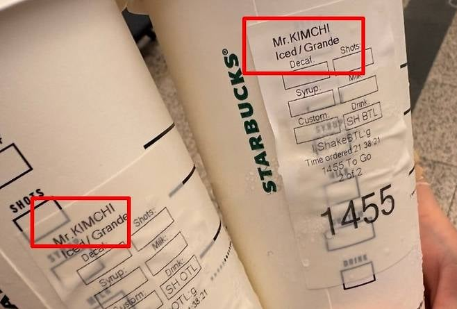

https://v.daum.net/v/20261025052921262
논란이 확산하자 스타벅스 홍콩은 지난 20일 서면을 통해 공식으로 사과했다.
나쁜말 마렵네

https://v.daum.net/v/20261025052921262
논란이 확산하자 스타벅스 홍콩은 지난 20일 서면을 통해 공식으로 사과했다.
나쁜말 마렵네
같은 아시아인끼리 인종차별하는 모습보면
아시아 새끼들은 패권 절대못잡겠다 싶긴함 ㅋㅋㅋㅋㅋㅋㅋㅋㅋㅋㅋ
중티나네
나는 피식했을 듯 ㅋㅋ
미국이면 소송로또인데
혹여 김씨라고 소개했으면 충분히 그럴만하지 않냐 ㅋㅋㅋㅋ
우산혁명대가 모두 죽었구나
MR.딤섬
나는 런던 스벅에서 테이크아웃 했을 때
이름 말하지도 않았는데 이름에 “Akira Toriyama”라고 써놓음
그냥 아는 동양인 이름 막 쓰는 듯
기왕이면 배추김치로..